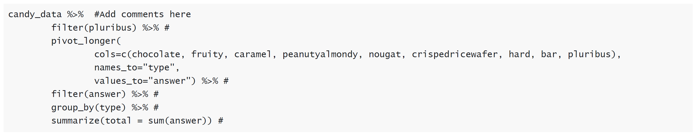
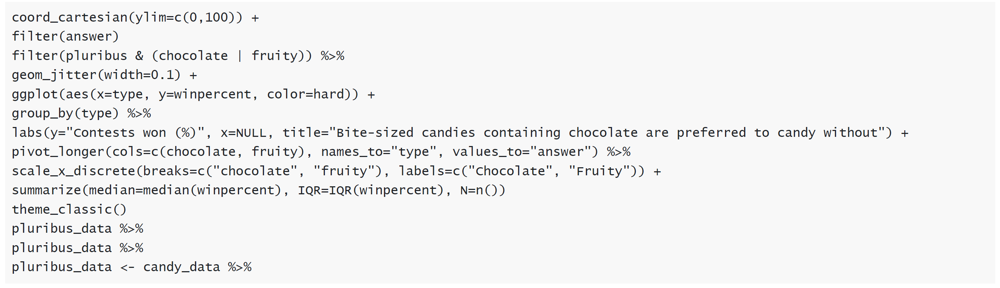
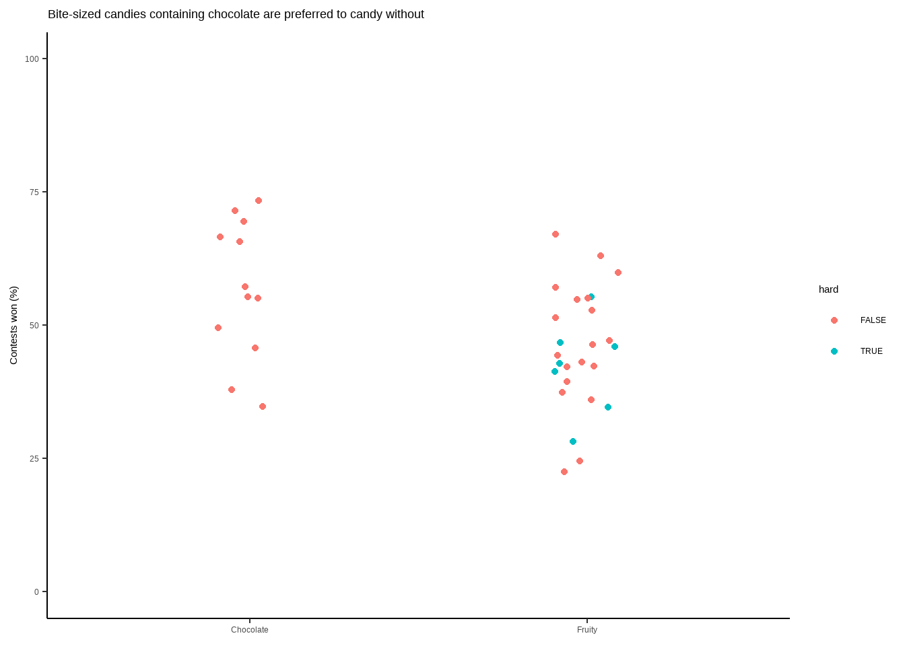
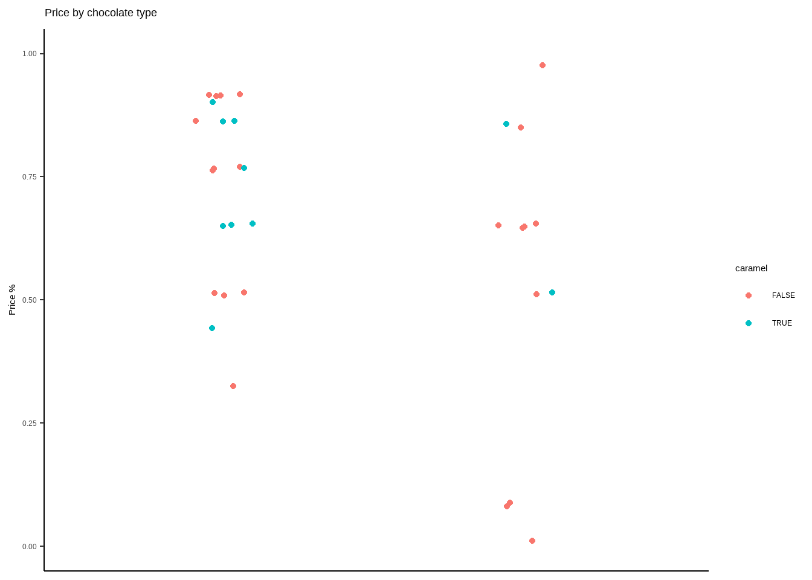

library(pacman)
p_load(tidyverse, skimr, scales, rmarkdown, magrittr, lubridate, janitor, ggrepel, ggthemes, showtext, knitr, reactable, palmerpenguins, car, broom, ggpubr, readxl, stringr, viridis, gghighlight)In this “Just Following Along” I will be dropping into Pat Schloss’s code club. Schloss is a professor at the University of Michigan and he started this code club during the pandemic. He posted them on YouTube and his website. It is a pretty cool format: people who are in the live session are given a few problems, sent to break out rooms to work together on the problems, and then reconvene to discuss what they came up with. I am coming to these a couple years later, but they still serve a great purpose: learning how to use R more effectively and efficiently.
My method for approaching these is to watch the video and then solve the problems as they are presented (before the solutions are given). Again, “Just Following Along”’s are like me showing that I did my homework.
Here is the Riffomanas website instructions. Included on the page is the YouTube video.
First we load in the candy data from fivethirtyeight.
candy_data <- read_csv("https://raw.githubusercontent.com/fivethirtyeight/data/master/candy-power-ranking/candy-data.csv",
col_types="clllllllllddd")Instructions:
I’m a big fan of bite-sized candies - Peanut M&Ms, Skittles, Hot Tamales - mmmmmm. Within the pantheon of candies they included (N=85), I would like to know how common bite-sized candies are. I grabbed this code chunk. It gives me the answers that I’m looking for, but I don’t understand the code. Run each line with the previous line (up to the the
%>%or+at the end of the line) to see what is happening with each added line. Write a brief comment to the right of the#so that you can remember what is happening the next time you need to do something like this

My answer:
candy_data %>% #Add comments here
filter(pluribus) %>% # This filters for only values that are TRUE in the "pluribus" column
pivot_longer(
cols=c(chocolate, fruity, caramel, peanutyalmondy, nougat, crispedricewafer, hard, bar, pluribus),
names_to="type",
values_to="answer") %>% # This takes all of the columns that have a TRUE/FALSE value and puts them into a column. The column next to it will now include the TRUE/FALSE values associated with that variable.
filter(answer) %>% # Filters the answer column for only values that are TRUE
group_by(type) %>% # clusters all the "type" values - distinguishes groups in the column
summarize(total = sum(answer)) # counts up all the answers that are "TRUE" by group## # A tibble: 7 x 2
## type total
## <chr> <int>
## 1 caramel 3
## 2 chocolate 12
## 3 crispedricewafer 1
## 4 fruity 26
## 5 hard 8
## 6 peanutyalmondy 4
## 7 pluribus 44Instructions:
It appears that among the bite-sized candies, the chocolatey (Peanut M&Ms) and fruity (Skittles) are the most common. Do people prefer bite sized candies with chocolate or fruity flavor? I know the code below works, but I accidentally sorted the lines and the code no longer works! There were originally three code chunks - one that builds a data frame containing only pluribus candies, one that reports some summary statistics about chocolatey and fruity bite-sized candies, and one that builds a strip chart showing a point for each type of candy. Unjumble the code to recreate the three code chunks. There are no missing or extra lines of code. Also, feel free to add comments!

My answer:
pluribus_data <- candy_data %>% filter(pluribus & (chocolate | fruity)) %>%
pivot_longer(cols=c(chocolate, fruity), names_to="type", values_to="answer") %>%
filter(answer)
pluribus_data %>% group_by(type) %>%
summarize(median=median(winpercent), IQR=IQR(winpercent), N=n())## # A tibble: 2 x 4
## type median IQR N
## <chr> <dbl> <dbl> <int>
## 1 chocolate 56.3 18.7 12
## 2 fruity 45.2 14.5 26pluribus_data %>%
ggplot(aes(x=type, y=winpercent, color=hard)) +
geom_jitter(width=0.1) +
scale_x_discrete(breaks=c("chocolate", "fruity"), labels=c("Chocolate", "Fruity")) +
labs(y="Contests won (%)", x=NULL, title="Bite-sized candies containing chocolate are preferred to candy without") +
coord_cartesian(ylim=c(0,100)) +
theme_classic()
Instructions:
Thanks! Now that you’ve fixed the code in Exercise 2, can you modify it to answer a new question for me? Are chocolate candies more expensive as a bar or as bite-sized pieces? Pick a third variable to color the data by. Copy and paste your code from Exercise 2 and edit it to help answer my question.
My answer:
choco_data <- candy_data %>% filter(chocolate & (pluribus | bar)) %>%
pivot_longer(cols=c(pluribus, bar), names_to="type", values_to="answer") %>%
filter(answer)
choco_data %>% group_by(type) %>%
summarize(median=median(pricepercent), IQR=IQR(pricepercent), N=n())## # A tibble: 2 x 4
## type median IQR N
## <chr> <dbl> <dbl> <int>
## 1 bar 0.767 0.256 20
## 2 pluribus 0.651 0.294 12choco_data %>%
ggplot(aes(x=type, y=pricepercent, color=caramel)) +
geom_jitter(width=0.1) +
scale_x_discrete(breaks=c("Bar", "Pluribus"), labels=c("Bar", "Pluribus")) +
labs(y="Price %", x=NULL, title="Price by chocolate type") +
coord_cartesian(ylim=c(0,1)) +
theme_classic()